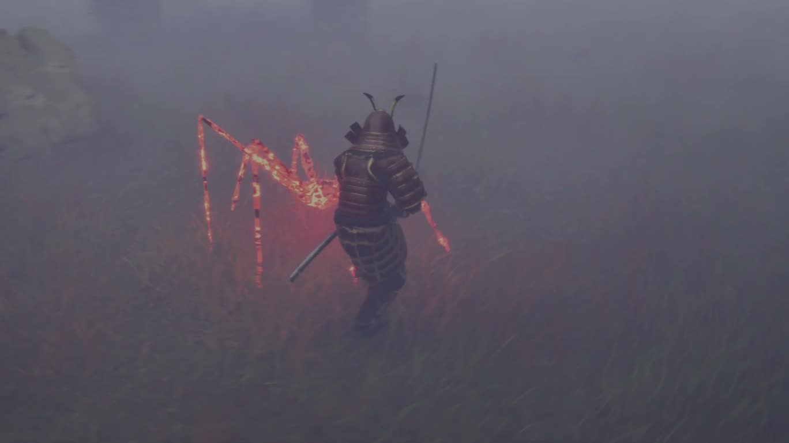
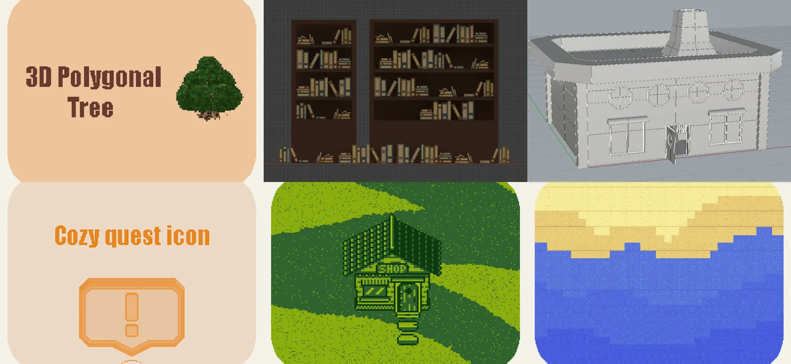
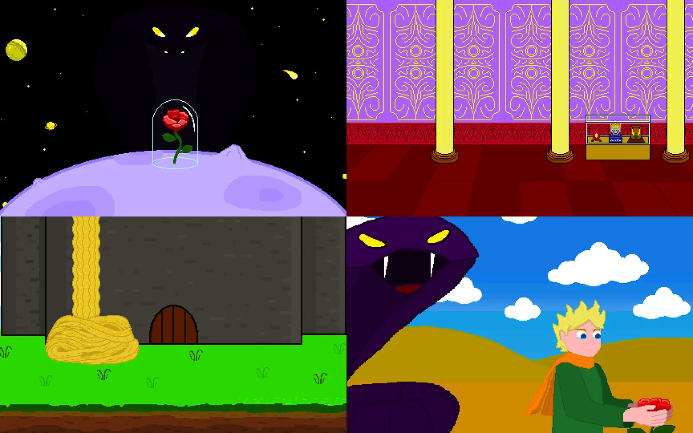

Marco Serra
Junior Technical Designer · Unity (C#) · Unreal (Blueprint) · VR
Progetto le meccaniche e poi le implemento. A ottobre 2026 mi sono laureato in Ingegneria dell'Informazione per Videogame e Realtà Virtuale all'Università Politecnica delle Marche (107/110). Tesi e tirocinio: VR Immersive Journalism, prototipo VR per Meta Quest 3 sviluppato da solo in Unity/C#.
Cerco un ruolo junior come technical designer o gameplay programmer. Sono disponibile a trasferirmi in Italia e in Europa.
Progetti
Per ogni progetto trovi cosa ho fatto io, le scelte di design e un estratto del lavoro tecnico.
-

Progetto d'esame · team di 3 · 2026
Ashen Sea
Action adventure souls-like in Unreal Engine 5. Nel team mi sono occupato dei nemici e della loro AI.
Ruolo: Nemici e AI: ragno procedurale e golem
Vedi il progetto -

Serious game · team di 2 · 2025–2026
Fact Checker
Un serious game 3D sulle fake news: il giocatore verifica le notizie della giornata e decide quali pubblicare.
Ruolo: Sistema delle notizie, cutscene, asset 3D
Vedi il progetto -

Gioco narrativo · progetto individuale · 2026
Gift Among Memories
Un gioco narrativo fatto da solo in circa due settimane e pubblicato su itch.io. Si gioca nel browser.
Ruolo: Sviluppo, scrittura e pubblicazione
Vedi il progetto
Come lavoro
- 01
Progetto prima di scrivere codice
User story, requisiti e un piano a fasi, prima di aprire l'editor.
- 02
Implemento quello che progetto
Sistemi data-driven in Unity e C#, AI e animazione dei nemici in Unreal con Blueprint, interazioni VR con il Meta XR SDK.
- 03
Verifico e scrivo cosa manca
Controllo requisito per requisito e dico chiaramente cosa funziona, cosa è parziale e cosa farei dopo.
Altri lavori

Asset 2D e 3D su itch.io
Librerie e alberi low-poly, icone, tileset e scene in stile Game Boy, fatti con Blender, Rhinoceros e Aseprite.
Profilo itch.io
Broken Tales
Scene e ambienti in pixel art ispirati a fiabe classiche, per l'esame di UX Design e Grafica 2D (2024).
Contatti
Scrivimi per un colloquio o per un test tecnico o di design. Il CV è disponibile in italiano e in inglese.